library(arrow) # Data import
library(dplyr) # Data manipulation
library(sf) # Spatial
library(ggplot2) # Data visualization
library(mgcv) # GAM fitting
library(gratia) # GAM visualization
theme_set(theme_minimal())6 Initial sand tiger shark GAM exploration
6.1 Sand tiger shark Carcharias taurus
st_filepath <- file.path(Sys.getenv("DATA_DIR"), "data/RAW/sandtigers.csv")
sandtiger <- open_dataset(st_filepath, format = "csv") |>
mutate(
datetime = strptime(DateandTime, format = "%m/%d/%Y %H:%M", tz = "UTC"),
wk = week(datetime),
yr = year(datetime)
) |>
group_by(Transmitter, wk, yr) |>
summarize(
med_lon = median(Longitude, na.rm = TRUE),
med_lat = median(Latitude, na.rm = TRUE)
) |>
collect()ggplot(sandtiger) +
geom_point(aes(x = wk, y = med_lat), alpha = 0.4, color = "orange") +
facet_wrap(~yr) +
labs(x = "Week of year", y = "Weekly median latitude") +
theme(axis.title = element_text(size = 12))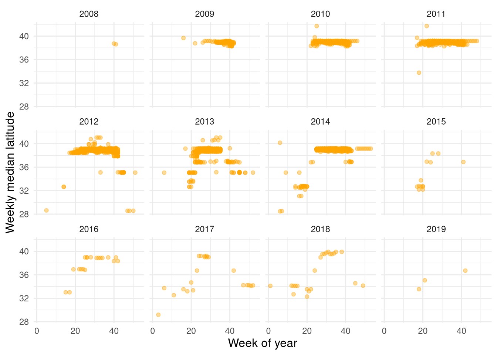
# A tibble: 1 × 2
lon0 lat0
<dbl> <dbl>
1 -75.1 38.7proj_string <- paste0(
"+proj=aeqd +lon_0=",
round(projection_center$lon0, 3),
" +lat_0=",
round(projection_center$lat0, 3)
)
proj_string[1] "+proj=aeqd +lon_0=-75.117 +lat_0=38.743"sandtiger_sf <- sandtiger |>
st_as_sf(coords = c("med_lon", "med_lat"), crs = 4326) |>
st_transform(proj_string)
sandtiger_sf |>
distinct(geometry) |>
ggplot() +
geom_sf() +
coord_sf(datum = proj_string)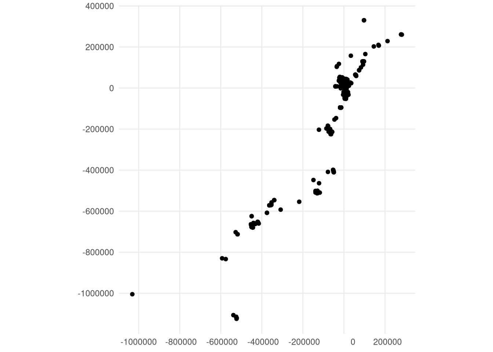
migration_azimuth <- sandtiger_sf |>
# Extract AEQD coordinates
st_coordinates() |>
# Run PCA
prcomp() |>
# Extract PCA loadings
_$rotation |>
# Transpose matrix
t() |>
# Find coordinates of a second location on the X axis.
# Here we use 1 km but it could be any value
(\(.) c(1e3, 0) %*% .)() |>
# Find the angle between true north and migration north
(\(.) atan2(.[1], .[2]) * 180 / pi)()
# Measure clockwise from north
migration_azimuth <- ifelse(
migration_azimuth < 0,
180 + migration_azimuth,
migration_azimuth
)
migration_azimuth[1] 25.09121st_crs(sandtiger_sf) <- "+proj=aeqd +lat_0=90 +lon_0=0"
proj_rotated <- paste0("+proj=aeqd +lat_0=90 +lon_0=", migration_azimuth)
sandtiger_migration_north <- sandtiger_sf |>
st_transform(proj_rotated) |>
# extract coordinates for modeling purposes
mutate(x = st_coordinates(geometry)[, 1], y = st_coordinates(geometry)[, 2])
ggplot(sandtiger_migration_north) +
geom_sf() +
coord_sf(datum = proj_rotated)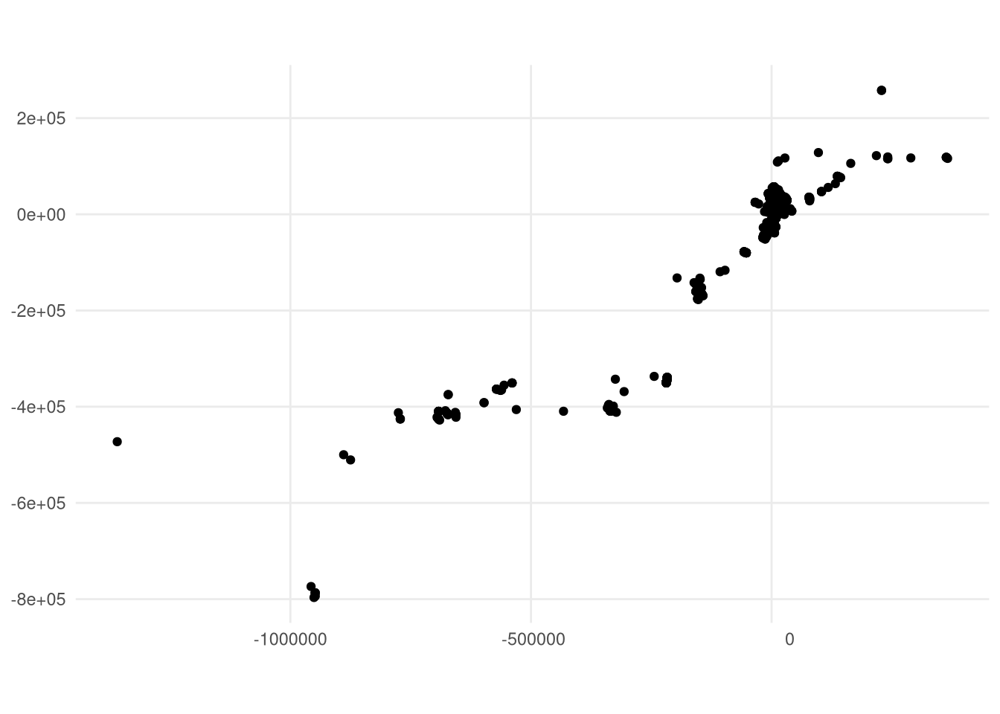
ggplot(sandtiger_migration_north) +
geom_point(aes(x = wk, y = x), alpha = 0.4, color = "orange") +
facet_wrap(~yr) +
labs(
title = "Migration synchrony",
x = "Week of year",
y = "Distance along the migration vector"
) +
theme(axis.title = element_text(size = 12))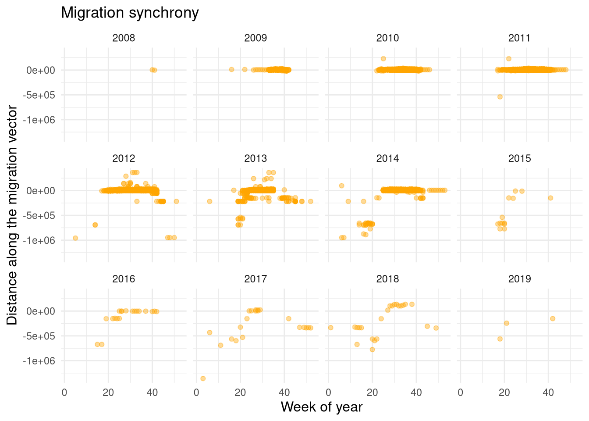
ggplot(sandtiger_migration_north) +
geom_point(aes(x = wk, y = y, color = group), alpha = 0.4, color = "orange") +
facet_wrap(~yr) +
labs(
title = "Migration front",
x = "Week of year",
y = "Distance across the migration vector"
) +
theme(axis.title = element_text(size = 12))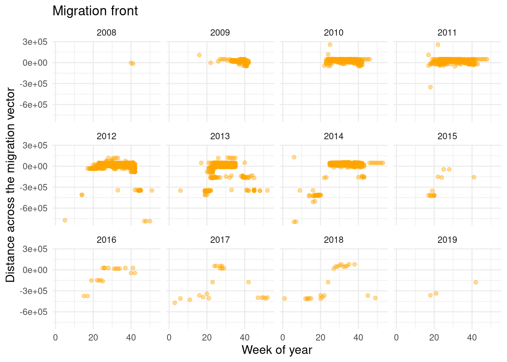
6.1.1 Initial GAM
6.1.1.1 Migration vector
model_data <- sandtiger_migration_north |>
mutate(yr_f = factor(yr))
m1_st <- model_data |>
gam(
x ~ s(wk, k = 27, bs = "cc") + s(yr_f, bs = "re"),
knots = list(wk = c(1, 53)),
data = _,
method = "REML"
)
summary(m1_st)
Family: gaussian
Link function: identity
Formula:
x ~ s(wk, k = 27, bs = "cc") + s(yr_f, bs = "re")
Parametric coefficients:
Estimate Std. Error t value Pr(>|t|)
(Intercept) -55224 24767 -2.23 0.0258 *
---
Signif. codes: 0 '***' 0.001 '**' 0.01 '*' 0.05 '.' 0.1 ' ' 1
Approximate significance of smooth terms:
edf Ref.df F p-value
s(wk) 24.01 25 4328.72 <2e-16 ***
s(yr_f) 10.64 11 43.91 <2e-16 ***
---
Signif. codes: 0 '***' 0.001 '**' 0.01 '*' 0.05 '.' 0.1 ' ' 1
R-sq.(adj) = 0.574 Deviance explained = 57.7%
-REML = 71046 Scale est. = 2.9382e+09 n = 5759draw(m1_st, select = "s(wk)", residuals = TRUE)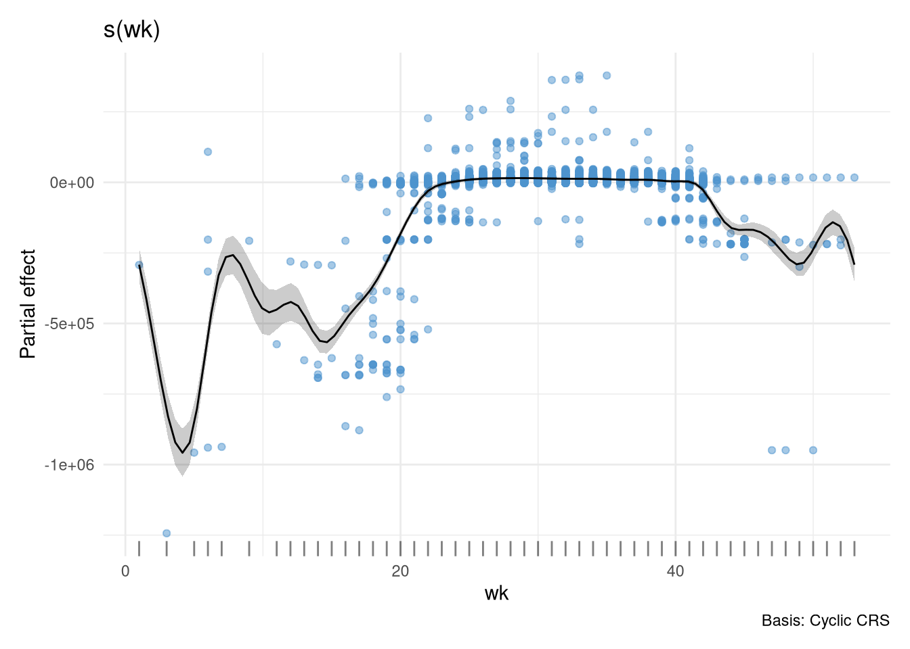
m2_st <- model_data |>
gam(
x ~ yr_f + s(wk, by = yr_f, k = 27, bs = "cc"),
knots = list(wk = c(1, 53)),
data = _,
method = "REML"
)
summary(m2_st)
Family: gaussian
Link function: identity
Formula:
x ~ yr_f + s(wk, by = yr_f, k = 27, bs = "cc")
Parametric coefficients:
Estimate Std. Error t value Pr(>|t|)
(Intercept) 5237.4 1973.4 2.654 0.00798 **
yr_f2011 -321.4 2166.4 -0.148 0.88208
yr_f2013 -42477.6 3112.9 -13.645 < 2e-16 ***
yr_f2014 -20452.7 2331.6 -8.772 < 2e-16 ***
yr_f2012 -5507.1 2157.1 -2.553 0.01071 *
yr_f2010 277.5 2211.9 0.125 0.90017
yr_f2008 -3719.8 27071.3 -0.137 0.89071
yr_f2015 -122129.3 262896.7 -0.465 0.64227
yr_f2018 41996.4 15893.0 2.642 0.00825 **
yr_f2017 51717.8 452208.6 0.114 0.90895
yr_f2019 74448.6 219252.5 0.340 0.73420
yr_f2016 -25218.7 11448.8 -2.203 0.02765 *
---
Signif. codes: 0 '***' 0.001 '**' 0.01 '*' 0.05 '.' 0.1 ' ' 1
Approximate significance of smooth terms:
edf Ref.df F p-value
s(wk):yr_f2009 0.035947 14 0.000 0.934471
s(wk):yr_f2011 6.510823 20 1.297 0.000109 ***
s(wk):yr_f2013 18.143015 21 215.473 < 2e-16 ***
s(wk):yr_f2014 24.356384 25 599.666 < 2e-16 ***
s(wk):yr_f2012 20.902270 23 268.428 < 2e-16 ***
s(wk):yr_f2010 0.101991 16 0.005 0.432037
s(wk):yr_f2008 0.004463 3 0.000 0.888653
s(wk):yr_f2015 6.471024 8 147.123 < 2e-16 ***
s(wk):yr_f2018 13.014395 19 118.190 < 2e-16 ***
s(wk):yr_f2017 15.675741 18 141.659 < 2e-16 ***
s(wk):yr_f2019 1.962773 2 51.893 < 2e-16 ***
s(wk):yr_f2016 11.258557 16 54.144 < 2e-16 ***
---
Signif. codes: 0 '***' 0.001 '**' 0.01 '*' 0.05 '.' 0.1 ' ' 1
R-sq.(adj) = 0.874 Deviance explained = 87.7%
-REML = 67705 Scale est. = 8.7017e+08 n = 5759draw(m2_st, select = c("s(wk)"), partial_match = TRUE, residuals = TRUE)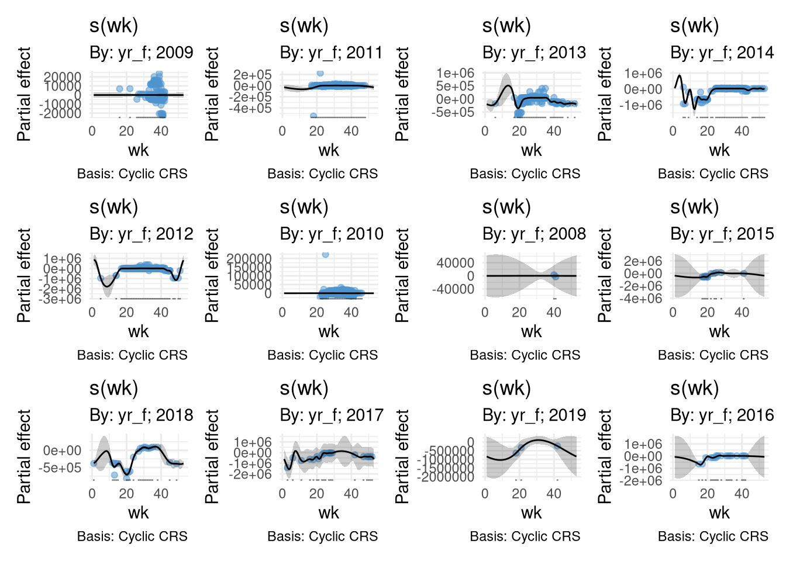
6.1.1.2 Migration front
We’ll do the same with the migration front (the deviation from the migration vector).
m1_mf <- model_data |>
gam(
y ~ s(wk, k = 27, bs = "cc") + s(yr_f, bs = "re"),
knots = list(wk = c(1, 53)),
data = _,
method = "REML"
)
summary(m1_mf)
Family: gaussian
Link function: identity
Formula:
y ~ s(wk, k = 27, bs = "cc") + s(yr_f, bs = "re")
Parametric coefficients:
Estimate Std. Error t value Pr(>|t|)
(Intercept) -29480 18807 -1.568 0.117
Approximate significance of smooth terms:
edf Ref.df F p-value
s(wk) 21.36 25 4167.30 <2e-16 ***
s(yr_f) 10.58 11 45.34 <2e-16 ***
---
Signif. codes: 0 '***' 0.001 '**' 0.01 '*' 0.05 '.' 0.1 ' ' 1
R-sq.(adj) = 0.598 Deviance explained = 60%
-REML = 69922 Scale est. = 2.0046e+09 n = 5759draw(m1_mf, select = "s(wk)", residuals = TRUE)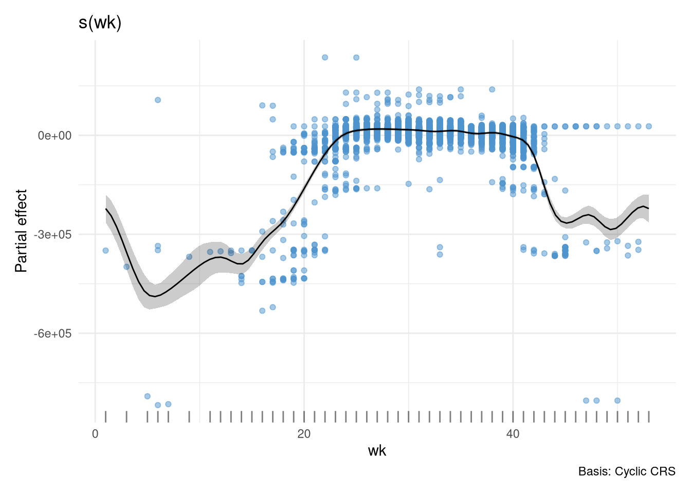
m2_mf <- model_data |>
gam(
y ~ yr_f + yr_f + s(wk, by = yr_f, k = 27, bs = "cc"),
knots = list(wk = c(1, 53)),
data = _,
method = "REML"
)
summary(m2_mf)
Family: gaussian
Link function: identity
Formula:
y ~ yr_f + yr_f + s(wk, by = yr_f, k = 27, bs = "cc")
Parametric coefficients:
Estimate Std. Error t value Pr(>|t|)
(Intercept) 29397.8 3671.6 8.007 1.42e-15 ***
yr_f2011 -3948.4 3761.5 -1.050 0.293909
yr_f2013 -56068.8 4319.1 -12.982 < 2e-16 ***
yr_f2014 -12463.7 3841.2 -3.245 0.001182 **
yr_f2012 -13519.1 3745.4 -3.610 0.000309 ***
yr_f2010 -198.6 3964.9 -0.050 0.960059
yr_f2008 -38222.2 33346.1 -1.146 0.251750
yr_f2015 -124464.3 82008.5 -1.518 0.129146
yr_f2018 -28914.0 10141.0 -2.851 0.004371 **
yr_f2017 -59549.6 74722.2 -0.797 0.425516
yr_f2019 -271979.3 45919.4 -5.923 3.35e-09 ***
yr_f2016 -32481.3 9276.1 -3.502 0.000466 ***
---
Signif. codes: 0 '***' 0.001 '**' 0.01 '*' 0.05 '.' 0.1 ' ' 1
Approximate significance of smooth terms:
edf Ref.df F p-value
s(wk):yr_f2009 2.70670 14 1.612 7.75e-06 ***
s(wk):yr_f2011 7.35684 20 5.225 < 2e-16 ***
s(wk):yr_f2013 18.67490 21 369.195 < 2e-16 ***
s(wk):yr_f2014 23.80834 25 356.027 < 2e-16 ***
s(wk):yr_f2012 20.52964 23 322.082 < 2e-16 ***
s(wk):yr_f2010 8.36187 16 4.589 < 2e-16 ***
s(wk):yr_f2008 0.01339 4 0.000 0.742
s(wk):yr_f2015 5.10558 8 47.384 < 2e-16 ***
s(wk):yr_f2018 9.47040 19 81.634 < 2e-16 ***
s(wk):yr_f2017 11.28888 18 66.331 < 2e-16 ***
s(wk):yr_f2019 1.37134 3 8.950 1.99e-07 ***
s(wk):yr_f2016 7.84278 16 23.450 < 2e-16 ***
---
Signif. codes: 0 '***' 0.001 '**' 0.01 '*' 0.05 '.' 0.1 ' ' 1
R-sq.(adj) = 0.855 Deviance explained = 85.8%
-REML = 67116 Scale est. = 7.2302e+08 n = 5759draw(m2_mf, select = "s(wk)", residuals = TRUE, partial_match = TRUE)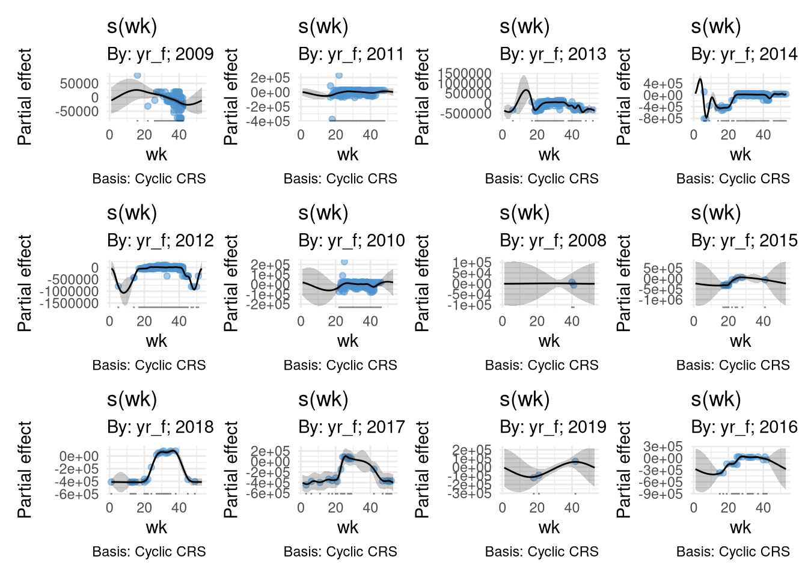
6.1.2 Model evaluation
appraise(m1_st)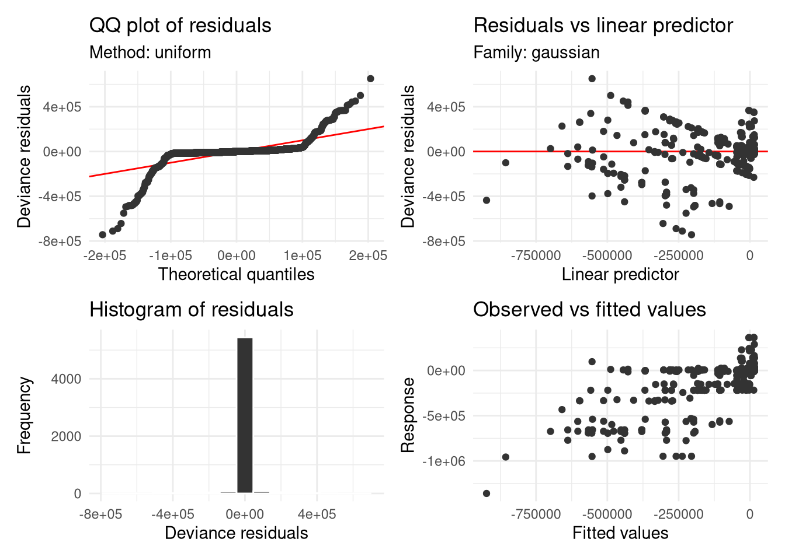
appraise(m2_st)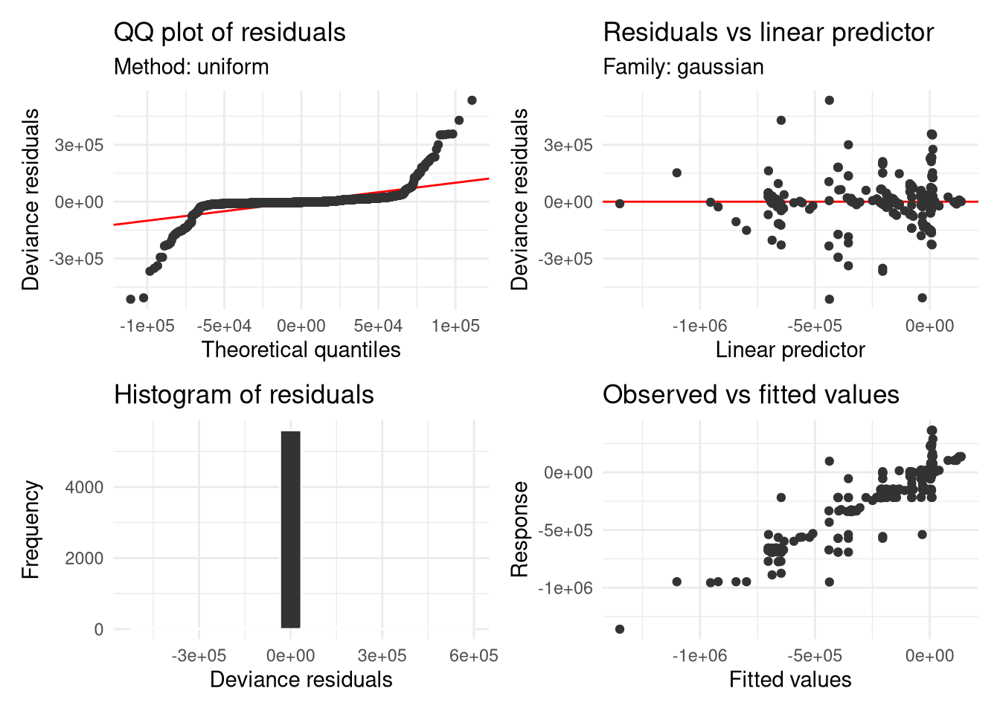
appraise(m1_mf)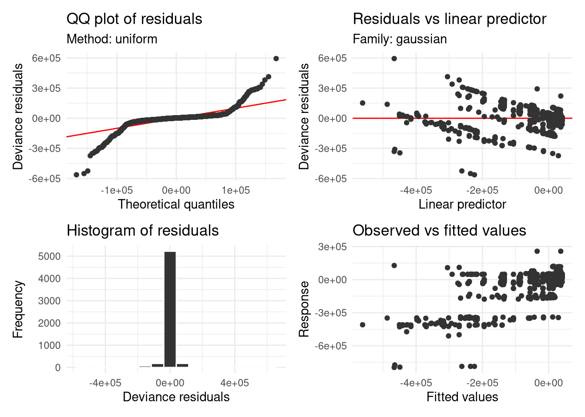
appraise(m2_mf)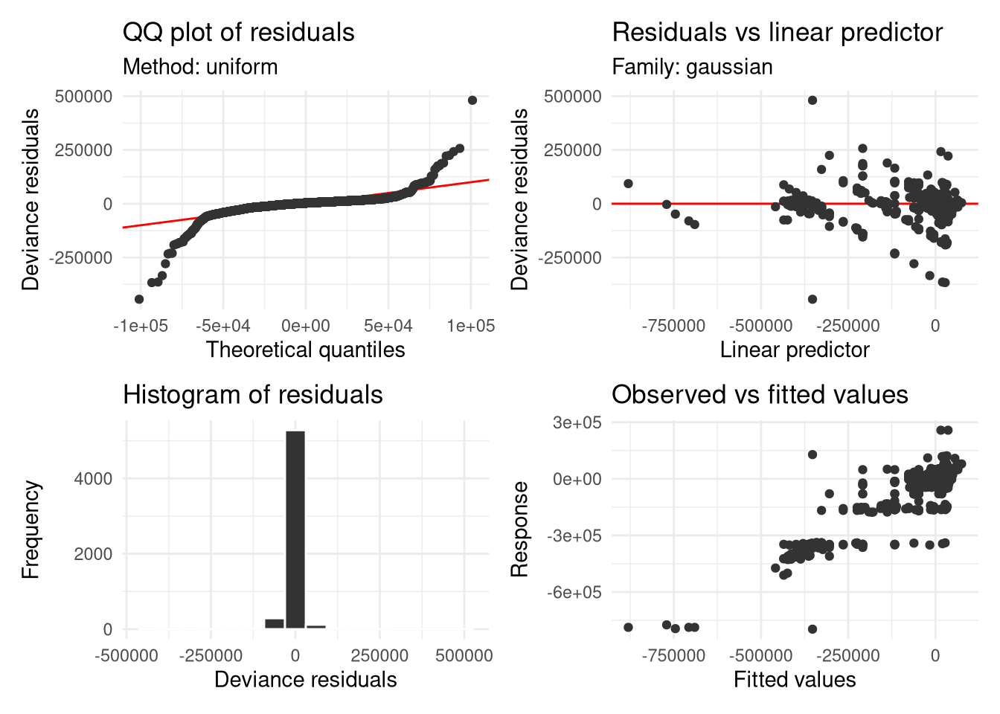